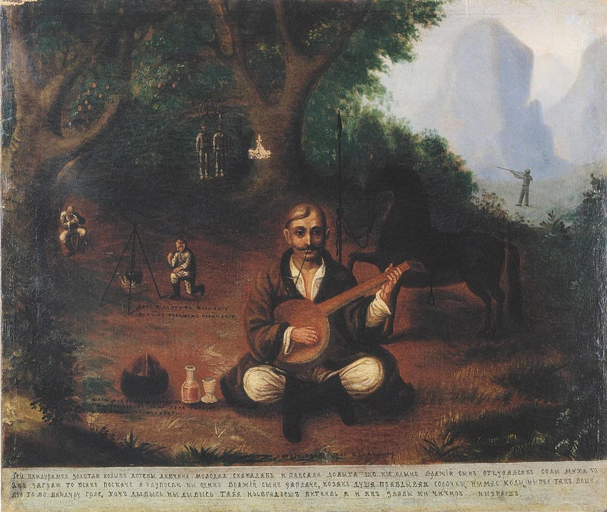

.png)
Історія України — історія земель сучасної України, українського народу та інших національностей, що проживають на території України, від доісторичних часів до сьогодення.
Територію України первісні люди почали заселяти з давніх-давен (перші сліди датуються близько 1 млн років), після чого вже її не полишали навіть в часи найбільшого просування льодовиків на південь. Територія країни належить до найперших вогнищ цивілізації та містобудування, вона входить до первісного ареалу приручення коня, винаходу колеса та освоєння перших металів людством. Різні хвилі міграції індоєвропейців до Європи та пізніші в зворотному напрямку склали підґрунтя різнобарвної картини її населення.
Поділ території на великі природні лісову й степову смуги зумовив різні форми господарювання й заклав характер подальших історичних процесів, в яких степ український завжди залишався невід'ємною складовою загальноєвразійських історичних і етноміграційних процесів у Великому степу. Грецька колонізація морського узбережжя увібрала територію України до орбіти античної цивілізації як її північний фронтир. Велике переселення народів першої половини першого тисячоліття н. е. підживило процеси державотворення у слов'янських племен, у яких на Східноєвропейській рівнині постала потужна середньовічна держава Київська Русь. Подальші процеси феодального дроблення відкинули окремі її частини на різні орбіти європейського та євразійського світів (Золота Орда).
Західні землі Руси спочатку зібрало Велике князівство Литовське, яке, шукаючи союзників у боротьбі з Московським царством та балтійськими німцями тісно інтегрується із Польським королівством. Утворюється потужна східноєвропейська держава ранньомодерного часу — Річ Посполита. Соціально-політичні процеси в якому й нагальна потреба в захисті від кочовиків на півдні призводять до появи козацтва. Яке саме невдовзі стане провідною силою в процесах його руйнації, становленню нової української нації, розбудові самостійної держави — Гетьманщини. Українська нація, затиснута між трьох світів, мусульманського півдня, католицької твердині на заході й нового православного центру на сході, намагається торувати власний шлях, що на певному етапі більш тяжів до останнього.
Завдяки культурному просвітництву хвилі мігрантів з Подніпров'я, що знайшли місце застосування власним талантам на Москві, остання поступово частково європеїзувалася та трансформувалася у потужну євразійську силу — Російську імперію. Ця сила за декілька століть поглинула майже усі українські етнічні землі, намагалася асимілювати їхнє населення у власному цивілізаційному морі.
Придушуючи всі спроби власної національної розбудови українців, намагається не дати іншим державам відірвати їх до власних орбіт, поєднуючи силу та підступність, перманентно нав'язує власну волю нескореному народові. Народові, що наприкінці XX століття виборов для себе ще один шанс бути господарем на свої землі, володарем своєї волі та своєї долі. Український народ продовжує боротьбу за власне місце у цім світі.

Територію України первісні люди почали заселяти з давніх-давен (перші сліди датуються близько 1 млн років), після чого вже її не полишали навіть в часи найбільшого просування льодовиків на південь. Територія країни належить до найперших вогнищ цивілізації та містобудування, вона входить до первісного ареалу приручення коня, винаходу колеса та освоєння перших металів людством. Різні хвилі міграції індоєвропейців до Європи та пізніші в зворотному напрямку склали підґрунтя різнобарвної картини її населення.
Поділ території на великі природні лісову й степову смуги зумовив різні форми господарювання й заклав характер подальших історичних процесів, в яких степ український завжди залишався невід'ємною складовою загальноєвразійських історичних і етноміграційних процесів у Великому степу. Грецька колонізація морського узбережжя увібрала територію України до орбіти античної цивілізації як її північний фронтир. Велике переселення народів першої половини першого тисячоліття н. е. підживило процеси державотворення у слов'янських племен, у яких на Східноєвропейській рівнині постала потужна середньовічна держава Київська Русь. Подальші процеси феодального дроблення відкинули окремі її частини на різні орбіти європейського та євразійського світів (Золота Орда).
Західні землі Руси спочатку зібрало Велике князівство Литовське, яке, шукаючи союзників у боротьбі з Московським царством та балтійськими німцями тісно інтегрується із Польським королівством. Утворюється потужна східноєвропейська держава ранньомодерного часу — Річ Посполита. Соціально-політичні процеси в якому й нагальна потреба в захисті від кочовиків на півдні призводять до появи козацтва. Яке саме невдовзі стане провідною силою в процесах його руйнації, становленню нової української нації, розбудові самостійної держави — Гетьманщини. Українська нація, затиснута між трьох світів, мусульманського півдня, католицької твердині на заході й нового православного центру на сході, намагається торувати власний шлях, що на певному етапі більш тяжів до останнього.
Завдяки культурному просвітництву хвилі мігрантів з Подніпров'я, що знайшли місце застосування власним талантам на Москві, остання поступово частково європеїзувалася та трансформувалася у потужну євразійську силу — Російську імперію. Ця сила за декілька століть поглинула майже усі українські етнічні землі, намагалася асимілювати їхнє населення у власному цивілізаційному морі.
Придушуючи всі спроби власної національної розбудови українців, намагається не дати іншим державам відірвати їх до власних орбіт, поєднуючи силу та підступність, перманентно нав'язує власну волю нескореному народові. Народові, що наприкінці XX століття виборов для себе ще один шанс бути господарем на свої землі, володарем своєї волі та своєї долі. Український народ продовжує боротьбу за власне місце у цім світі.